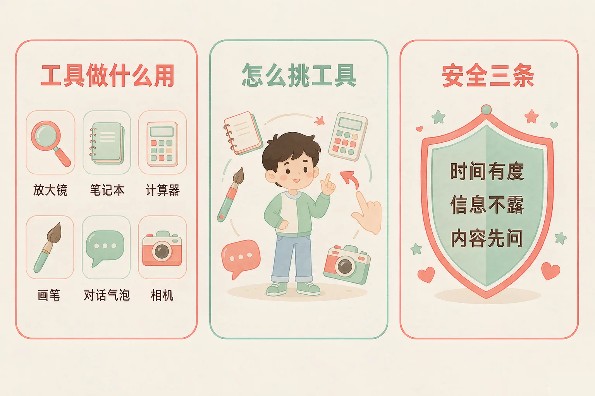
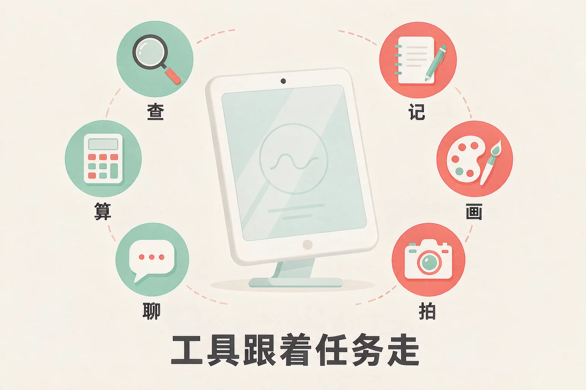
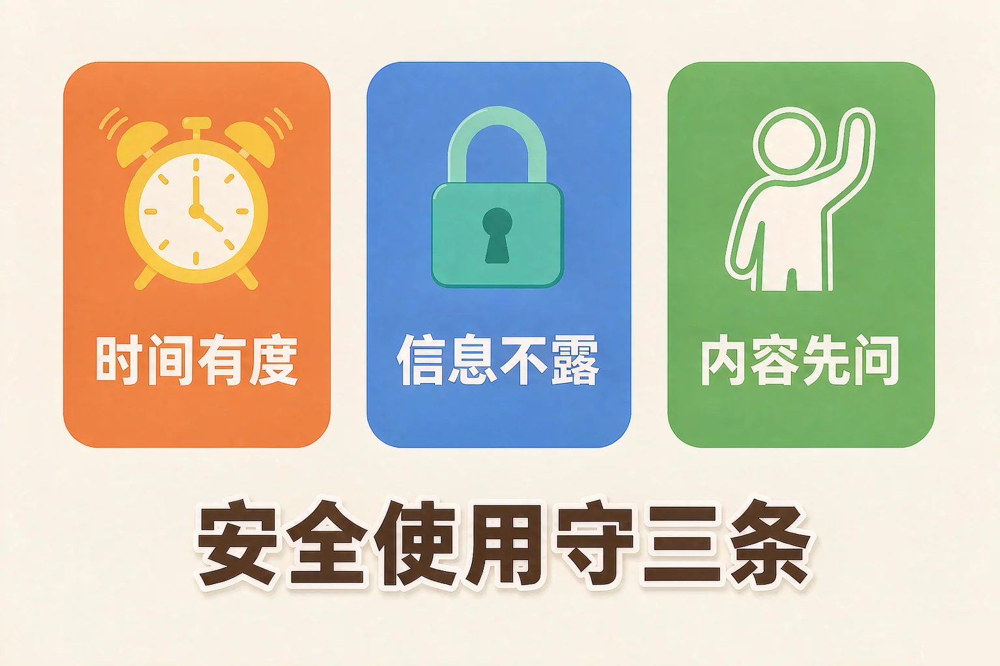

Gallery
v1.0.0 · skill v7.22.0
小学二年级 · 在线社会与信息表达
身边的手机、平板、电脑，各能帮我们做什么？用的时候要注意什么？

选一个你真正好奇的问题，后面的动手活动都会围着它转。
选择或输入后，这节课会围绕你的问题展开。
先凭直觉选一个，选完立刻看到解释——错了也没关系，正好知道要重点听哪里。
1. 想要知道明天的天气，下面哪个工具最合适？
天气应用拿到的就是气象台发布的信息，专门回答天气这件事。错因提醒：常见错误是手里有什么工具就用什么工具，没先看清事情要的是什么。
2. 在不认识的网站上，跳出一个框让你填妈妈的手机号，你应该：
家人的手机号属于个人信息，不管对方说什么都不要填。错因提醒：很多同学误认为「只是填个号码没关系」，其实信息一旦发出去就收不回来了。
3. 用平板看动画片，下面哪种做法是安全的？
时间有度是第一条安全规则。约定好时间、到点就停，眼睛和身体才不会被累坏。错因提醒：不要把「停下来」当成「不好玩了」——会停的人，才能一直玩得开心。
手机、平板、电脑都是数字工具。它们按「帮我们做什么」分成几类：查、记、算、画、聊、拍。
查
在线搜索：找答案。
记
备忘录：把事记下来。
算
计算器：算数。
画
画图工具：画图做卡。
聊
视频通话：和远方的人说话。
拍
相机：拍照、录像。

🔍 深层理解 换个角度再看一遍这件事，看看能不能说出背后的原理。
看见它：身边每一个工具都在替你干一件具体的事：计算器替你算，备忘录替你记，地图替你认路。
比较它：同一件事常有好几个工具都能做：算 23 加 48，计算器最快，自己列竖式也行——挑的是最合适，不是唯一。
迁移它：换一件事，工具就换。写作业要的是想清楚，这时候最该用的工具其实是自己的脑子。
先点上面的一件事，再点下面你觉得最合适的工具。挑完立刻能看到理由。
先点一件事，再挑一个工具。
工具帮我们做事，也会带来麻烦。所以要守住三条规则——记成六个字：有度、不露、先问。

有的同学误认为「只是点开看一眼」「只是发到小群里」没关系。其实点开的那一下可能已经带来了麻烦，发出去的号码也收不回来了。记住六个字：不点、不说、告诉大人。
十条规则，做到的就点一下按钮。每点一条，都会告诉你这一条为什么重要。
题目：小美用平板时跳出一条消息：「点这个链接，免费领游戏皮肤。」她该怎么办？请一步一步说清楚。
有同学会说：「我就点开看一眼，不填东西。」这条路错在把「看一眼」当成「没有关系」——点开的那一下，麻烦可能已经进来了。把四步收成六个字：不点、不说、告诉大人。
先凭直觉选一个，选完立刻看到解释——错了也没关系，正好知道要重点听哪里。
1. 下面哪句话说得对？
工具是为任务服务的，先看清事情要什么，再挑工具。错因提醒：把「工具厉害」和「工具合适」搞混，是这一课最常见的错误。
2. 下面哪一种做法是安全的？
不认识的东西先给大人看，这是最稳的一步。错因提醒：有人误认为「先扫了再说」没关系，其实扫开之后你再想回头就晚了。
3. 网上有人发消息说：「把你家的照片发给我看看。」你应该：
不管对方是谁，家里的照片都不该随便发出去。错因提醒：不要把「他先问我」当成「他就有权知道」——该不该发，由你和家人决定。
下面有六条候选，最多只能挑三条。想一想哪三条对你家最重要，点一下就能选上，再点一下可以去掉。
还没有挑，约定还是空的。
先点一条你认为最重要的。
写下来，念给家人听：
这三条里面，哪一条你最容易忘？打算怎么提醒自己？
先凭直觉选一个，选完立刻看到解释——错了也没关系，正好知道要重点听哪里。
1. 放学路上，有人递给你一张卡片，上面印着一个二维码，说扫一下能领礼物。你应该：
陌生的二维码和陌生的链接一样，都不要扫。告诉大人是最稳的一步。错因提醒：常见错误是相信「换个地方扫就安全了」——不安全的是那张码，不是扫的地点。
2. 你正看得起劲，约定的 20 分钟到了，你应该：
时间有度，到点就停，这是自己在管自己。错因提醒：很多同学误认为「看完这一集」不算超时，可一集接着一集，时间就悄悄跑掉了。
3. 下面哪一件事，用了数字工具反而是不合适的？
家人手机号是个人信息，再方便的工具也不该用来做这件事。错因提醒：不要把「能做」和「该做」搞混——工具能做到，不代表这件事合适做。
再说一句：工具的本事，比不上用工具的人会安排。会挑、会停、会问，才是真的会用它。
给别人讲一遍：请用「工具、任务、三条规则」这三组词，说清楚你今天在自查清单上勾掉了几条、还剩几条。
三层练习，做完第一、二层就算通关；第三层留给愿意继续探索的同学。
⭐ 基础巩固（必做）
⭐⭐ 能力应用（必做）
⭐⭐⭐ 迁移挑战（选做）
左边是学它之前要先会的，右边是学会之后可以继续探索的，下面是同一领域的伙伴知识。
图谱正在加载：首次进入需下载知识索引（约 1–3 秒），加载完成后本行会自动消失。